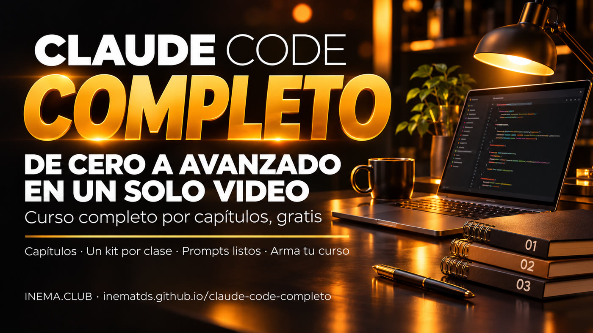

Juntas videos sueltos de aquí y de allá y no sabes por dónde empezar ni qué viene después. El curso completo en capítulos pone todo en orden, de lo básico a lo avanzado, y cada capítulo tiene un kit gratis para que lo pongas en práctica ese mismo día.

Claude Code es el asistente de IA de Anthropic que trabaja con los archivos de tu computadora: los lee, escribe, organiza y ejecuta tareas por ti. Este es un curso completo en capítulos, en un solo video y gratis, que va desde el mapa de Claude hasta agentes que demuestran lo que hacen, trabajan de forma segura y funcionan solos. Cada capítulo tiene una guía paso a paso y un prompt listo para copiar. Para verlo, basta con el navegador. El repositorio también incluye la herramienta que armó este video, para que juntes tus propios videos cortos en un curso largo.
El video corto que presenta el curso está en producción y aparecerá aquí cuando se publique. El curso completo ya está justo debajo.
Míralo de una vez o salta al capítulo que necesitas: en YouTube, la barra del video ya está dividida en capítulos.
Abrir en YouTube (video en portugués): youtube.com/watch?v=E5ZumaYjzT8
Haz clic en el tiempo para abrir el curso en ese punto. Cada capítulo tiene la guía completa del tema (gratis) y un prompt listo. Los prompts de los capítulos 1, 2 y 5 van en el chat de Claude (en el sitio o en la app); los demás, en Claude Code abierto en la carpeta de tu trabajo, donde están los archivos que va a leer.
El mapa de Claude para quienes no programan: los modelos, los proyectos, la memoria, los conectores, las skills, Cowork y Claude Code, y lo que habilita cada plan.
Trabajo como <tu profesión>. De las piezas de Claude (proyectos, memoria, conectores, skills, Cowork, Claude Code), ¿cuáles probablemente todavía no uso y cuál debería activar primero? Dame un paso a paso de 5 minutos para empezar por ella.Documentos, presentaciones y piezas de diseño con tu marca, a partir de un Proyecto con el texto "quién soy" (la mayoría funciona incluso en el plan gratis).
Arma para mí un texto "quién soy" para pegar en un Proyecto de Claude: mi negocio es <describe>, mi público es <describe>, mis colores son <colores> y mi forma de hablar es <describe>. Después haz una presentación de 5 diapositivas sobre <tema> usando ese texto.Lo que Claude Code hace en tu computadora y las novedades más útiles para quienes no programan: subagentes, tareas en segundo plano, paneles y más, con las precauciones para cada una.
Mira esta carpeta y dime, en lenguaje sencillo, qué hay aquí. Después propón 3 tareas repetitivas de mi día que podrías hacer en esta carpeta, y haz la primera solo después de que yo diga ok.Cómo leer los registros que Claude Code y Codex ya guardan en tu computadora para ver qué proyecto o rutina consumió el límite semanal de tu suscripción.
Descarga el kit medidor-de-limite (https://github.com/inematds/medidor-de-limite), sigue su README para ejecutar el medidor en esta máquina y explícame el resultado: qué proyecto o rutina gastó más mi límite en los últimos 7 días y qué puedo juntar o espaciar para gastar menos. No borres ni pauses nada.Ocho frases de escritura que hacen que la IA muestre lo que hizo (el archivo, la salida, la prueba) en vez de solo decir «listo», en ChatGPT, Claude o Gemini.
Antes de decir que terminaste, ejecuta la verificación y pega aquí la última línea de la salida. Si no tienes cómo probarlo, di qué faltó en lugar de decir "listo".El modelo de solicitud en el que el agente solo puede decir "listo" con la prueba en mano, y el verificador que califica tu solicitud de 0 a 8.
Reescribe este pedido en el formato prompt con prueba: objetivo, cómo vas a probar que lo hiciste, qué cuenta como listo y qué hacer si no se puede. Mi pedido: <pega aquí>.Los pasos para que el agente deje de repetir el mismo error: anotar la falla, distinguir un error en la solicitud de un error de la máquina y convertir la lección en un bloqueo automático.
Busca en este proyecto dónde anoto los errores que cometiste y las correcciones (por ejemplo FALHAS.md o LESSONS.md). Si no existe, crea un FALHAS.md con una línea por cada error que yo corrija de aquí en adelante. Después muéstrame los errores que más se repiten y propón, para cada uno, una traba automática (una prueba, un hook o una verificación) en lugar de una regla escrita más. No apliques nada sin mi aprobación.Las 4 reglas para que el agente estudie una app y haga su propia versión sin inventar lo que no vio, con un archivo de pruebas que un verificador rechaza cuando faltan pruebas.
Estudia esta app y escribe lo que hace en un archivo de pruebas: para cada función, de dónde lo sacaste (archivo, pantalla o salida). Lo que no viste, márcalo como "no probado" en lugar de suponer.Por qué el agente puede leer tus contraseñas y cómo hacer que trabaje en una caja desechable, sin red y sin tus archivos secretos.
Lista qué archivos de esta carpeta parecen secretos (.env, claves, tokens) y dime cómo ejecutarte aquí dentro de una caja desechable, sin red y sin esos archivos. No abras el contenido de los secretos.El diseño en tres capas para no perder tu código si bloquean tu cuenta: una copia en otra empresa, fotos fechadas en un disco tuyo y, si quieres, un servidor propio.
Lista mis repositorios git de esta máquina y arma un plan de copia en tres capas: otra empresa de alojamiento, una foto fechada en un disco mío y el comando para comprobar que la copia está completa. Muestra los comandos antes de ejecutarlos.Un panel de bots con nombre, función, memoria y tareas programadas, que responde con la suscripción de Claude o Codex que ya pagas, sin clave de API.
Quiero un equipo de 3 bots para mi trabajo de <profesión>: escribe el papel de cada uno en una frase, la tarea programada de cada uno y lo que cada uno nunca puede hacer sin preguntarme.Una sola pantalla que muestra lo que hicieron tus rutinas automáticas durante la noche, quién falló y qué te espera, leída en voz alta en portugués.
Lista las rutinas automáticas de esta máquina (timers, cron, colas) y dime, para cada una, cuándo se ejecutó por última vez, si salió bien y dónde está el log. Solo lee: no ejecutes ni detengas nada.Nuestro radar de lo que está en auge siguió 320 videos de 7 temas de IA (ronda del 12/11/2026) y comparó cada video con el promedio del propio canal. Lo muy corto y lo muy largo llegaron más lejos que lo intermedio.
Mediana de cuántas veces el normal del propio canal hizo cada video, por duración (20, 48, 31 y 33 videos). Fuente: radar de lo que está en auge, INEMA, 12/11/2026.
De aquí para abajo está la parte técnica: unir tus videos cortos en un video largo con capítulos. Tú no hace falta de esta parte para ver el curso.
O montar_curso.py es la misma herramienta que armó el curso de arriba. Le das la lista de videos y títulos; te devuelve el video largo, los capítulos y la descripción.
3 segundos de pantalla negra con "CAPÍTULO N de T" y el título en amarillo y blanco antes de cada video.
Cada video pasa por una normalización de audio para que nadie tenga que ajustar el volumen entre un capítulo y otro.
Genera la lista "00:00 Título" con los tiempos reales del video final y la descripción lista para pegar.
Todos los videos se convierten al mismo tamaño (1920×1080 de forma predeterminada, con bordes si la proporción es diferente), a 30 cuadros por segundo y con audio a −16 LUFS. El capítulo empieza en la tarjeta misma. Al final, la herramienta verifica que la duración del MP4 coincida con la suma de las partes (con hasta 1 s de diferencia) y solo entonces finaliza correctamente.
Todo se ejecuta en la terminal, la ventana de comandos de la computadora: en Mac, abre la app Terminal; en Linux, Ctrl+Alt+T. Los comandos son para Mac y Linux; en Windows, usa WSL (Ubuntu dentro de Windows) y sigue los pasos de Linux.
Compruébalo con el comando de abajo. Si no lo tienes, descárgalo en python.org.
python3 --versionEl programa que une y convierte los videos. Ubuntu/WSL: sudo apt install ffmpeg. Mac: brew install ffmpeg.
ffmpeg -versionCon git, el comando de abajo. Sin git: en el GitHub del kit, botón "Code" → "Download ZIP", y descomprímelo.
git clone https://github.com/inematds/claude-code-completo cd claude-code-completo
Pillow dibuja las tarjetas de capítulo. Instálalo en un entorno separado (venv), que funciona incluso en los sistemas que bloquean pip directo. Dentro de la carpeta del kit:
python3 -m venv .venv source .venv/bin/activate pip install -r requirements.txt # la próxima vez, basta con source .venv/bin/activate
Crea tres videos de prueba y arma un curso de 45 segundos con ellos, para ver el resultado antes de usar los tuyos:
python3 ferramentas/videos_de_teste.py python3 ferramentas/montar_curso.py exemplos/meu-curso.json --saida saida/curso.mp4
Copia el ejemplo a la carpeta del kit y abre la copia en un editor de texto (TextEdit, Bloc de notas o VS Code). Cambia el título, las descripciones y, en cada capítulo, el archivo y el título. Usa la ruta completa de cada video (ej.: ~/Videos/clase1.mp4): las rutas cortas del ejemplo (videos/aula1.mp4) solo valen dentro de la carpeta exemplos/. Los nombres de los campos (titulo, capitulos, arquivo, en portugués) se quedan como están: la herramienta solo lee esos.
cp exemplos/meu-curso.json meu-curso.json # {"titulo": "...", "descricao_topo": "...", "descricao_fim": "...", # "capitulos": [{"arquivo": "~/Videos/clase1.mp4", "titulo": "Primeros pasos"}, ...]}
Sin gastar tiempo de renderizado, mira los capítulos estimados y las advertencias de YouTube (al menos 3 capítulos, cada uno de 10 s o más):
python3 ferramentas/montar_curso.py meu-curso.json --saida saida/meu-curso.mp4 --so-capitulos
Un curso de 30 minutos tarda aproximadamente media hora en una computadora común. El resultado incluye tres archivos:
python3 ferramentas/montar_curso.py meu-curso.json --saida saida/meu-curso.mp4 # saida/meu-curso.mp4 · saida/meu-curso-capitulos.txt · saida/meu-curso-descricao.txt
Sube el MP4 a YouTube y pega el contenido de -descricao.txt en la descripción. YouTube convierte las líneas "00:00 Título" en los capítulos de la barra del video.
cat saida/meu-curso-descricao.txt
Cambia la duración de la tarjeta, el tamaño o los cuadros por segundo; y ejecuta las pruebas del propio kit (requieren pytest):
python3 ferramentas/montar_curso.py meu-curso.json --saida saida/meu-curso.mp4 --cartao-s 4 --largura 1280 --altura 720 python3 -m pytest -q # 10 pruebas con videos sintéticos
La lista del curso de arriba está en curso/curso.json (los videos originales no están en el repositorio). Esta fue la salida:
00:00 As 25 peças do Claude 03:37 O Claude como escritório 06:13 13 novidades do Claude Code 09:21 Quem comeu o seu limite 11:53 As 8 frases que pedem prova 14:13 Prompt com prova 16:31 O agente que aprende com o erro 19:23 Refazer um app pedindo prova 22:06 A caixa do agente 24:18 Seus repositórios a salvo 27:44 Time de bots pela assinatura 30:37 O painel dos seus robôs